Como adicionar o Claude AI
no Excel e no PowerPoint
Instale e configure o assistente de IA da Anthropic diretamente nas suas ferramentas do Microsoft 365.
Este guia detalha os passos para instalar e configurar o Claude AI como suplemento no Microsoft Excel e no Microsoft PowerPoint. Com o Claude integrado, você pode utilizar inteligência artificial para auxiliar em análises de dados, criação de fórmulas, geração de conteúdo para apresentações e muito mais.
Abrir o Excel ou PowerPoint
Abra o Microsoft Excel ou o Microsoft PowerPoint e clique para abrir um projeto em branco.
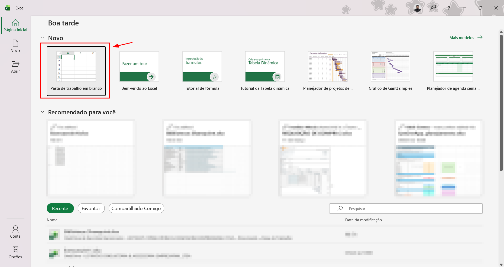
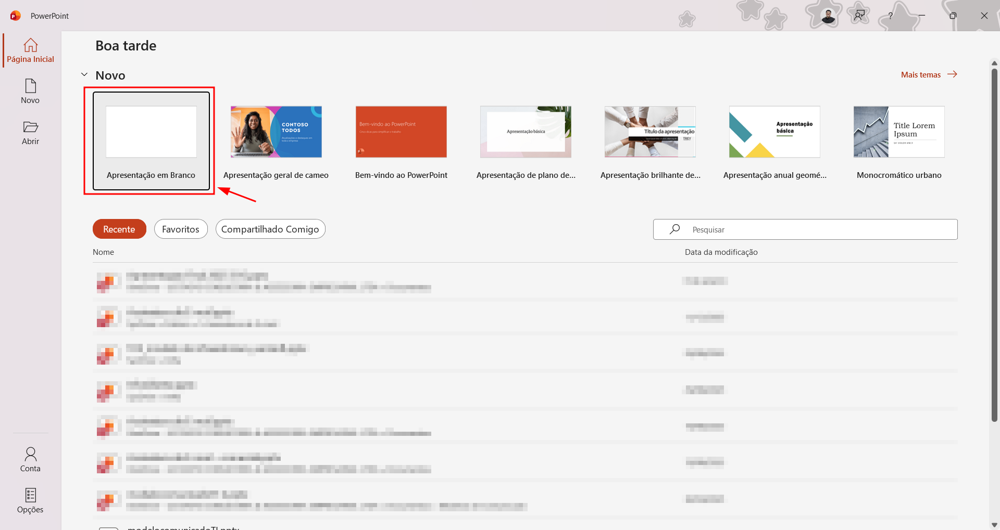
Acessar os Suplementos
Na barra de ferramentas, procure pela seção "Suplementos" e clique no ícone para abrir a loja de suplementos do Office.
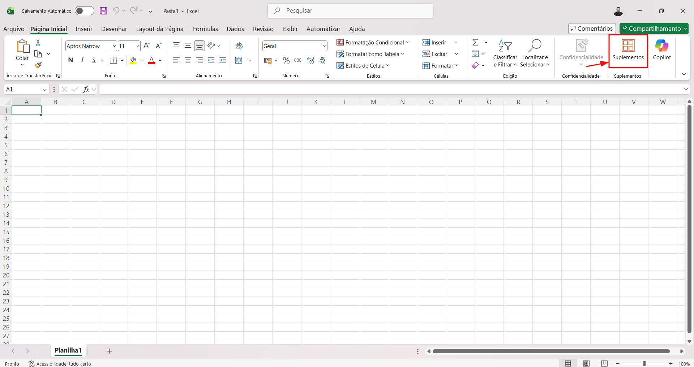
Pesquisar pelo Claude
No campo de pesquisa da loja de suplementos, digite "Claude" e clique sobre o resultado.
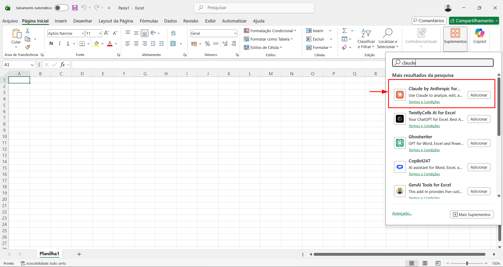
Instalar o suplemento
Confira se o nome do aplicativo é "Claude by Anthropic for Excel" (ou "Claude by Anthropic for PowerPoint", conforme o aplicativo que estiver usando). Em seguida, clique em "Adicionar".
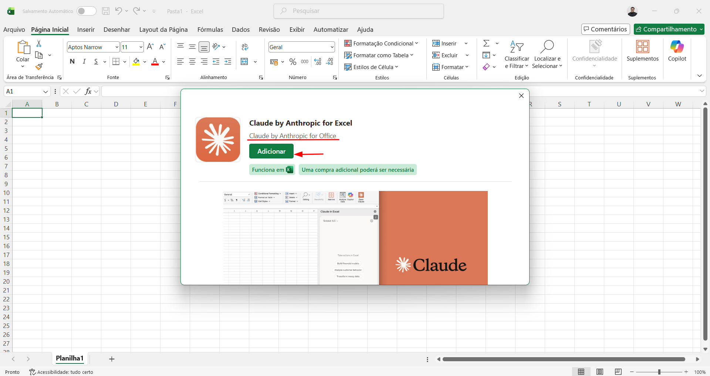
Abrir o Claude e fazer login
Com o suplemento instalado, ele aparecerá no canto superior direito da barra de ferramentas. Clique sobre o ícone do Claude e depois clique em "Log in to Claude".
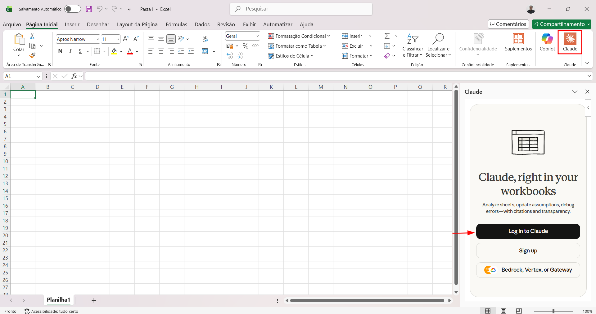
Autorizar o acesso
Uma nova janela será exibida. Clique em "Autorizar" para permitir a conexão entre o suplemento e sua conta do Claude.
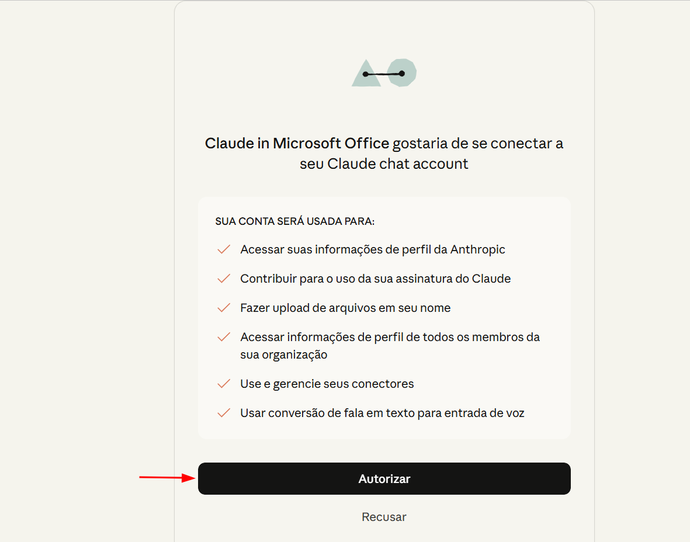
Copiar o código de login
Após a autorização, um código será exibido na tela. Clique no botão "Copy sign-in code" para copiar o código.
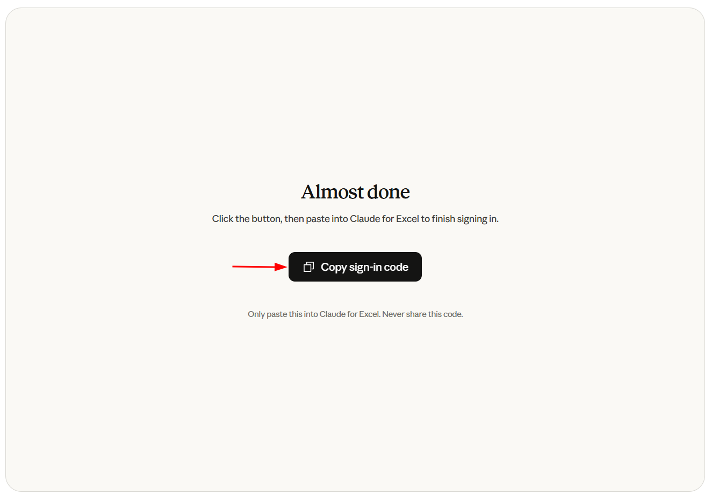
Fechar a janela de autorização
Com o código copiado, feche esta janela e retorne ao Excel ou PowerPoint.
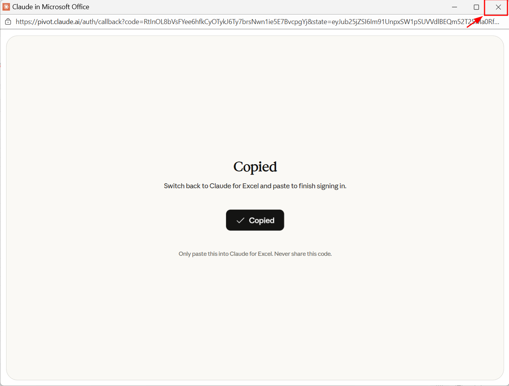
Colar o código e finalizar
De volta ao suplemento, cole o código no campo exibido e clique em "Continue".
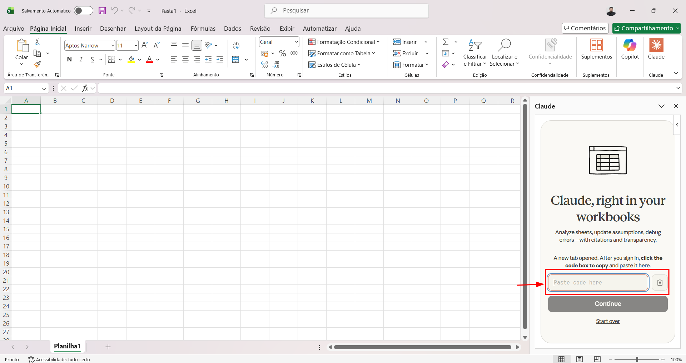
Pronto!
O Claude AI está instalado e configurado. Você já pode começar a utilizá-lo para auxiliar em suas atividades no Excel e no PowerPoint.
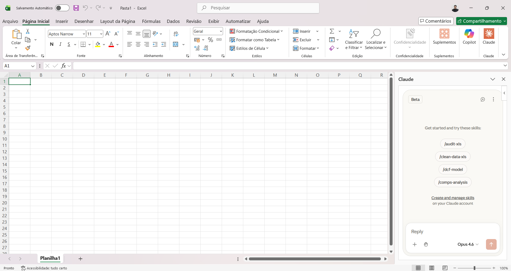
📋 Observações
Em caso de dúvidas ou problemas durante o processo, entre em contato
com a equipe de Service Desk nos canais:


Também estamos disponíveis no Microsoft Teams.